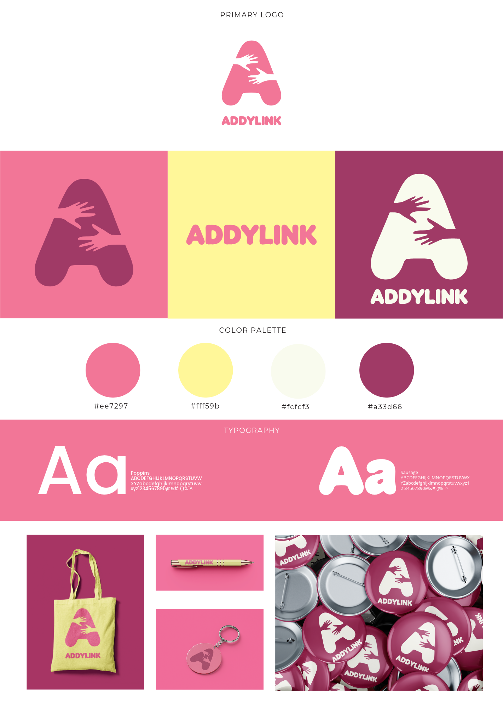
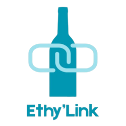
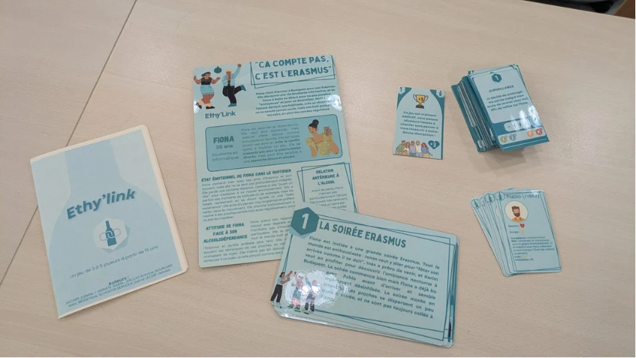
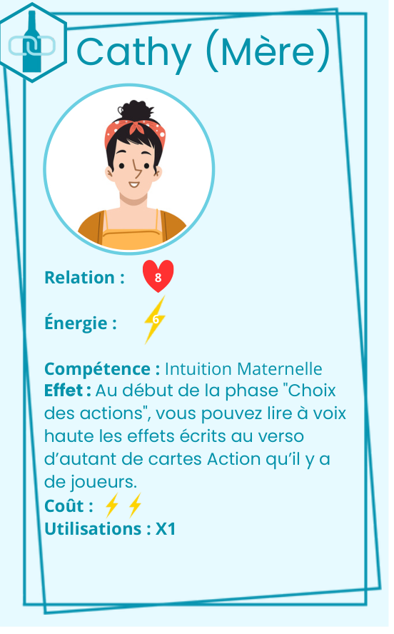
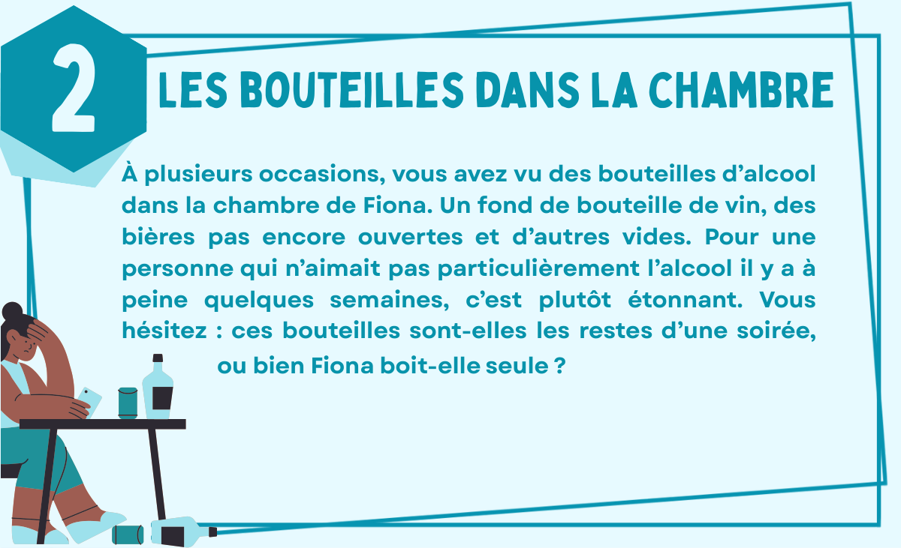
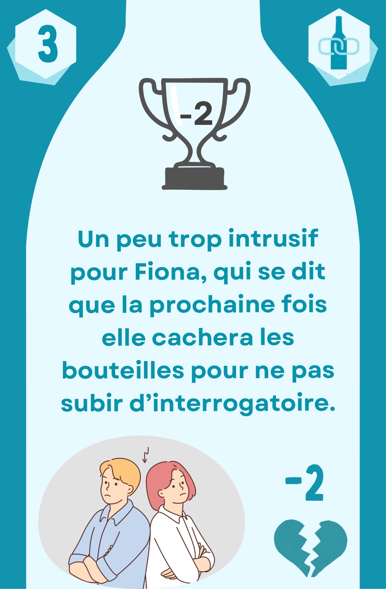

01 / 07
Plateaux et accessoires
Les plaques suivent la relation et l’énergie de chaque personnage. La jauge et le pion de score rendent visible la progression collective.
Des jeux sérieux pour accompagner les aidants.
Addylink est notre projet associatif. Ethy’link est notre premier jeu, consacré aux proches de personnes alcoolodépendantes.
Découvrir le prototype ↓

Prototype Ethy’link2025 · Projet étudiant à l’ENSC, avec une équipe de plusieurs promotions.
Le jeu invite les proches à discuter de situations liées à l’alcoolodépendance : comment soutenir une personne tout en préservant son énergie et sa relation avec elle ?
Des échanges avec des professionnels de santé nous ont aidés à affiner le jeu.

J’ai participé à la conception du fonctionnement des personnages.
J’ai fabriqué les plaques personnages à la découpe laser.
J’ai participé aux tests avec des professionnels de santé et à l’analyse de leurs retours.
Ce que les tests ont révélé Des incohérences dans les pouvoirs des personnages ont été repérées lors des essais.
Incarnez les proches de Fiona, une étudiante de 20 ans en Erasmus à Budapest, et discutez ensemble des choix possibles face aux situations du jeu.

Mère, frère, ami ou colocataire : chaque proche a sa relation avec Fiona, son énergie et une compétence propre.
Un personnage, un point de vue.
Une situation survient. Discutez des réactions possibles, puis choisissez une action : certaines coûtent des jetons d’énergie.
Des choix à construire ensemble.
Retournez les cartes : vos choix font évoluer la relation et le score collectif. Comment aider sans s’épuiser ?
Des effets à mettre en discussion.Parcourez les éléments du prototype avec les flèches ou en faisant glisser les cartes.
Les plaques suivent la relation et l’énergie de chaque personnage. La jauge et le pion de score rendent visible la progression collective.
Chaque joueur incarne un proche de Fiona, avec une relation, une réserve d’énergie et une compétence spécifique.
Fiona, 20 ans, découvre la vie étudiante à Budapest. Le scénario pose le contexte et présente son entourage.
Une situation fait avancer l’histoire à chaque manche et ouvre la discussion entre les joueurs.
Les joueurs discutent et choisissent une réaction. Le verso révèle ensuite ses effets sur la relation et le score collectif.
Le livret explique la mise en place, les choix d’actions et le déroulement de la partie.
Un support pour prolonger la réflexion après la partie, avec des repères et des ressources pour les proches.
Aujourd’hui · Le projet associatif
L’association se construit autour d’Ethy’link, avec l’envie de créer d’autres jeux pour les aidants.
Je m’occupe de la communication d’Addylink et je poursuis la conception d’Ethy’link avec l’équipe.
Je bénéficie du statut étudiant-entrepreneur.